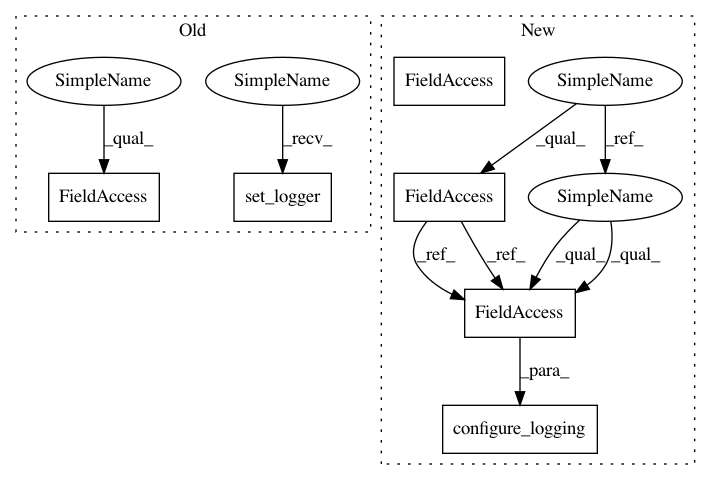

b69c5b6bb1ad6c59de357b5a8729719b6fd3b749,unittests/test_logging.py,TestLoggerConfiguration,test_handler_noappend,#TestLoggerConfiguration#,175
Before Change
self.close_handlers()
// Reload logger
self.set_logger()
self.logger.warning("bar")
self.assertFalse(self.found_in_logfile("foo"))
self.assertTrue(self.found_in_logfile("bar"))
After Change
self.assertTrue(self.found_in_logfile("foo"))
self.assertTrue(self.found_in_logfile("bar"))
def test_handler_noappend(self):
self.logging_config = {
"level": "INFO",
"handlers": {
self.logfile: {
"level": "WARNING",
"format": "[%(asctime)s] %(levelname)s: %(message)s",
"datefmt": "%F",
"append": False,
}
}
}
configure_logging(self.logging_config)
getlogger().warning("foo")
self.close_handlers()
// Reload logger
In pattern: SUPERPATTERN
Frequency: 3
Non-data size: 6
Instances
Project Name: eth-cscs/reframe
Commit Name: b69c5b6bb1ad6c59de357b5a8729719b6fd3b749
Time: 2017-12-07
Author: karakasis@cscs.ch
File Name: unittests/test_logging.py
Class Name: TestLoggerConfiguration
Method Name: test_handler_noappend
Project Name: eth-cscs/reframe
Commit Name: b69c5b6bb1ad6c59de357b5a8729719b6fd3b749
Time: 2017-12-07
Author: karakasis@cscs.ch
File Name: unittests/test_logging.py
Class Name: TestLoggerConfiguration
Method Name: test_handler_noappend
Project Name: eth-cscs/reframe
Commit Name: b69c5b6bb1ad6c59de357b5a8729719b6fd3b749
Time: 2017-12-07
Author: karakasis@cscs.ch
File Name: unittests/test_logging.py
Class Name: TestLoggerConfiguration
Method Name: test_stream_handler_stderr
Project Name: eth-cscs/reframe
Commit Name: b69c5b6bb1ad6c59de357b5a8729719b6fd3b749
Time: 2017-12-07
Author: karakasis@cscs.ch
File Name: unittests/test_logging.py
Class Name: TestLoggerConfiguration
Method Name: test_stream_handler_stdout